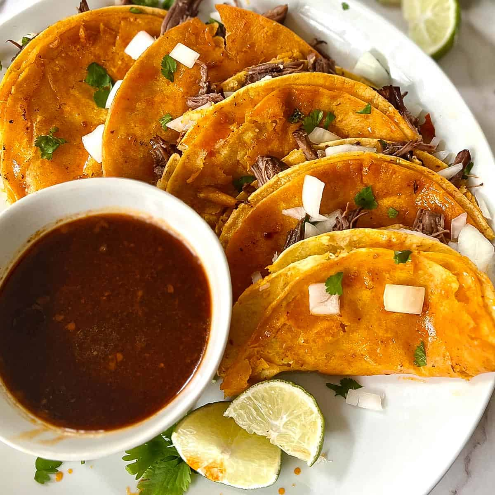

Quesabirria Tacos

What is it?
These Quesabirria tacos are made up of tender birria meat and melted cheese, wrapped in a crispy pan-seared
tortilla! Made in just one pot and minimal prep required, use the meat to make birria tacos too!
Ingredients
For the birria meat:
- Dried ancho chiles– Red poblano chiles that have been dried out. These can be found at specialty grocery stores or in the
Mexican food aisle of the supermarket.
- Mexican chiles– New Mexico chiles are preferred, but jalapeno peppers or chipotle peppers can also be used.
- Onion and tomato– Quartered to allow them to soften through the cooking process.
- Garlic– Whole cloves.
- Beef broth– A good quality beef broth makes all the difference, so avoid bouillon cubes and use freshly made broth.
- Vegetable oil– To brown the beef.
- Beef chuck roast– A slightly fattier cut of beef which falls apart once cooked (and soaks up all the flavors!). Cut
your beef into 1-inch cubes.
- Salt and pepper– To taste.
- Apple cider vinegar– Balances out the salty flavors.
- Cumin– Adds a light, smoky flavor.
- Coriander– Adds a subtle tartness and a must for any stewed or slow cooked meat.
- Bay leaves– Adds an extra layer of flavor to the dish.
Steps
- Start by adding the chiles, onion, tomato, garlic, and beef broth into a large pot and placing it over medium heat.
Bring it a boil then reduce the heat to low and let it simmer for 15 minutes.
- While the broth mixture is simmering, prepare the beef. Add the oil to a Dutch oven and once hot,
sear the beef on all sides until no longer pink.
- Next, remove the liquid mixture from the heat. Using a stick blender, puree everything together until smooth, then
add it to the Dutch oven.
- Add the salt, pepper, apple cider vinegar, coriander, and bay leaves and bring everything
to a simmer.
- Once simmering, remove from the heat and transfer it into a preheated oven and cook for 3 hours.
- Now, once the birria beef is done in the oven, remove it and shred the meat with two forks before assembling into
quesabirria tacos.
- Place the tortillas onto a flat surface and generously fill one side with the birria meat.
- Add the shredded cheese and a sprinkling of cilantro and fold in half.
- Place a large non-stick pan over medium heat.
Once hot, add the folded tortillas to the pan and cook for a minute each side, or until golden and sizzling.